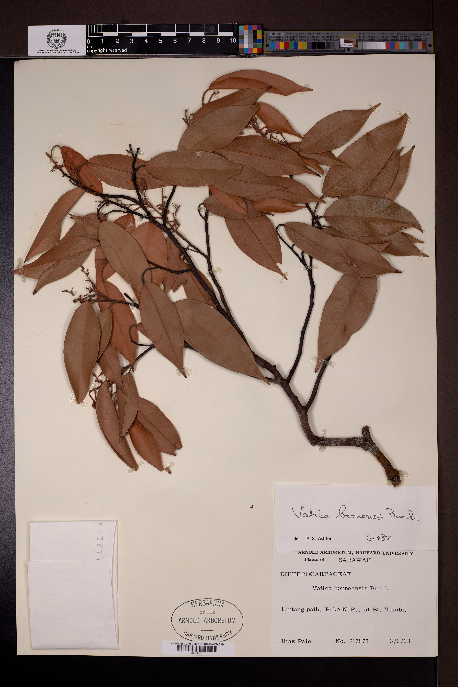

01Dipterocarpaceae · Vatica
Vatica borneensis
A tree endemic to Borneo's dipterocarp forests, this species can grow to about 35 metres. It has leathery elliptic leaves and dense clusters of pinkish-brown flowers.
Conservation: Near Threatened
Explore on iNaturalist ↗ Specimen image: Harvard University Herbaria